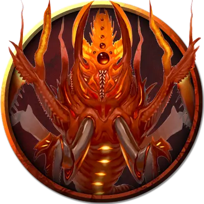

Детеныш потустороннего ужаса
Eldritch Horror Hatchling
Большой Монстр, без мировоззрения

Класс Доспеха 14 (природный доспех, 11 если сбит с ног)
Хиты 39 (6к10 + 6)
Скорость 30 футов, копая 10 футов
| мод | спас | ||
|---|---|---|---|
| СИЛ | 17 | +3 | +3 |
| ЛОВ | 11 | +0 | +0 |
| ТЕЛ | 13 | +1 | +1 |
| мод | спас | ||
|---|---|---|---|
| ИНТ | 1 | −5 | −5 |
| МДР | 13 | +1 | +1 |
| ХАР | 6 | −2 | −2 |
Чувства тёмное зрение 60 футов, пассивное Восприятие 11, чувство вибрации 60 футов
Опасность 2 (450 опыта)
Бонус мастерства +2
Действия
Укус. . Рукопашная атака оружием: +5 к попаданию, досягаемость 5 футов, одна цель. Попадание: 10 (2к6 + 3) рубящего урона плюс 3 (1к6) урона ядом. Если цель существо Большого размера или меньше, она становится схваченной ужасом (Сл высвобождения 13). Пока этот захват не закончится, детеныш потустороннего ужаса может кусать только схваченное существо, и для этого он совершает броски атаки с преимуществом.
Кислотный плевок (перезарядка 6). Детеныш потустороннего ужаса плюется кислотной линией длиной 30 футов и шириной 5 футов, при условии, что у него нет схваченных существ. Каждое существо в этой линии должно совершить спасбросок Ловкости Сл 13, получив 10 (3к6) урона кислотой в случае провала или половину этого урона в случае успеха.